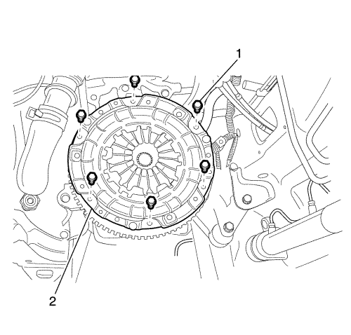
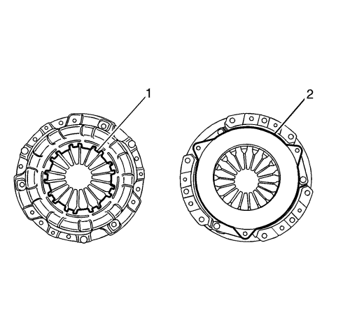
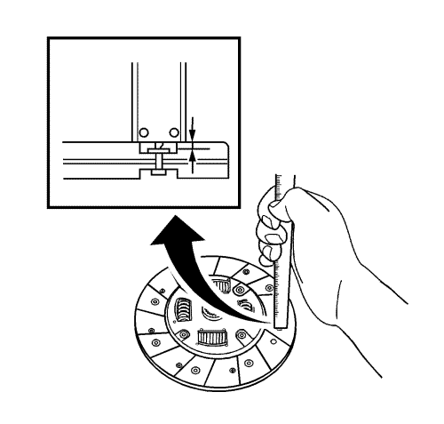
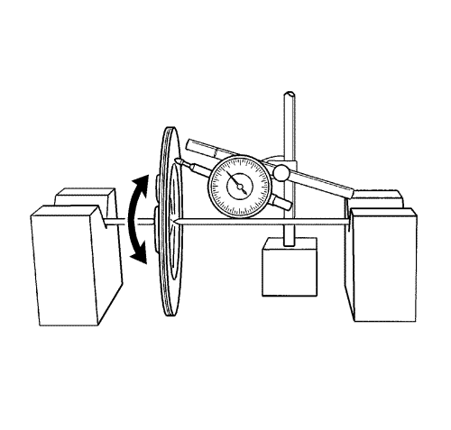
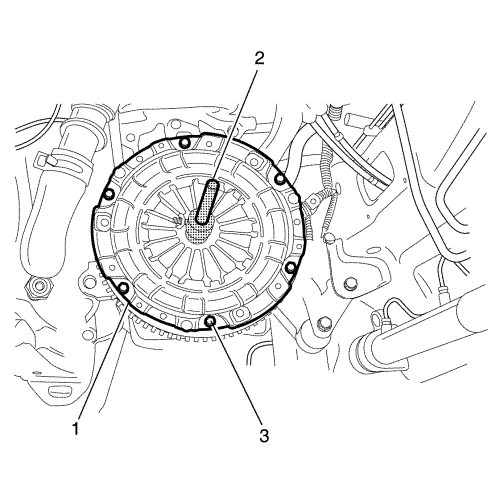

Sustitución del plato de presión y el plato conducido del embrague
Herramientas especiales
DT-50180 Guía para centrar embragues
Si desea informarse sobre herramientas regionales equivalentes, consultar Herramientas especiales .
Procedimiento de desmontaje
- Extraiga el soporte de la caja de cambios del vehículo. Consultar Sustitución de la caja de cambios .

Nota: Desmonte simétricamente los pernos del plato de presión del embrague para evitar que éste se deforme.
- Quite los 6 tornillos del plato de presión del embrague (1).
- Desmonte el plato de presión del embrague y el disco del embrague (2).
Procedimiento de inspección del plato de presión.

- Inspeccione si el resorte de diafragma está debilitado o dañado (1).
- Inspeccione si la cara puede estar contaminada con aceite o grasa (2)
Procedimiento de inspección del disco del embrague

- Mida la profundidad de la cabeza de los remaches desde la superficie del disco de embrague y sustitúyalos si ésta está bajo el límite.
Especificaciones
| • | La profundidad de cabeza de remache estándar equivale a 1,1 mm (0,043 pulg.) |
| • | La profundidad de cabeza de remache límite equivale a 0,4 mm (0,016 pulg.) |
- Sustituya el disco de embrague si su superficie está manchada de aceite o grasa o si sus remaches están flojos.
Procedimiento de inspección del alabeo del disco del embrague en un sentido de giro

Mida el alabeo en un sentido de giro y sustituya si el alabeo excede el límite.
Especificaciones
El límite de alabeo del disco en un sentido de giro equivale a 0,7 mm (0,028 pulg.).
Procedimiento de montaje

- Monte el plato de presión del embrague y el disco de embrague (1) al volante motor.
- Alinee el plato de presión del embrague y el disco de embrague en el volante motor usando la guía para centrar embragues DT-50180 (2).
Precaución: Consulte Precaución con las fijaciones en la sección Prólogo
- Monte los 6 pernos (3) y apriételos de forma cruzada hasta 35 N·m (26 lib. pie).
- Desmonte la guía para centrar embragues DT-50180 (2).
- Monte la caja de cambios en el vehículo. Consultar Sustitución de la caja de cambios .
| © Copyright Chevrolet Europe. Reservados todos los derechos |